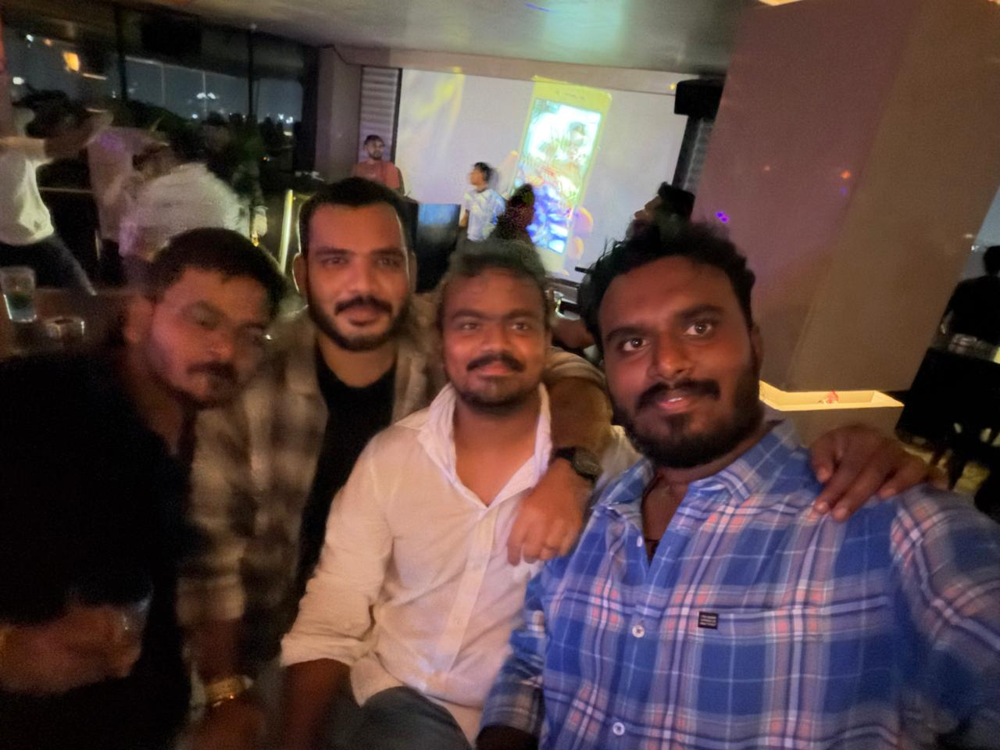

Karunakar
Senior Engineer
Karunakar, your passion for work is truly contagious. The dedication and ownership you bring to everything you do have always been inspiring to watch. Beyond work, thank you for helping me explore Hyderabad and making the city feel a little less unfamiliar and a lot more enjoyable.

Gokul Raj
Software Engineer II
Gokul, although you may be a bit on the quieter side, your actions have always spoken louder than words. Your dedication and consistency at work are truly admirable, and I've always appreciated how reliably you deliver. What stands out even more is the balance you've managed to maintain between work and life, something many of us strive for but few do as well.

Sai Chandan
Senior Engineer
Chandan, even though you've joined the team recently, you've already made a strong impression with your positive attitude and eagerness to learn. Your approach to work, willingness to take on challenges, and openness to feedback will undoubtedly take you far.

BhanuSri
Software Engineer II
Bhanushree, one of the qualities I admire most about you is your kindness and willingness to help others. You've always been incredibly generous with sharing your knowledge, whether it was answering questions, offering guidance, or helping someone get unstuck.

Sandeep
Senior Engineer
Sandeep, if MotivMix SV had a backbone, it would undoubtedly be you. Your hard work, dedication, and relentless commitment have been instrumental in keeping things moving forward. What I admire most is your passion for creative thinking and your ability to bring fresh ideas to the table.

Komal
Software Engineer II
Komal, thank you for being such a patient and kind mentor whenever I had questions about the MOTIV Video app. No matter how basic or complex the doubt was, you were always willing to help and share your knowledge.

Rajesh Gowda
Software Engineer II
Rajesh, one of the things I admire most about you is how grounded and down-to-earth you are despite being one of the smartest people on the team. You're always willing to help, share ideas, and lend a hand whenever someone needs it. Beyond work, you've been my go-to person for weekend plans, local recommendations, and those much-needed conversations in Kannada whenever I was missing home a little extra. Thank you for being such a great colleague, friend, and constant source of support.

Vaishnavi
Senior Engineer
Vaishnavi, your kindness and hardworking nature are qualities that make you a pleasure to work with. No matter the task, you've always approached it with dedication, positivity, and a willingness to help others. And of course, I can't forget your foodie side! Whether it was discussing good food, sharing recommendations, or planning the next place to try, those conversations always added a little extra fun to the workday. Keep being the wonderful person you are, both professionally and personally.

Anil
Associate Staff Engineer
Anil, you've always been my go-to person for badminton at Shure, and I don't think I've met anyone with as much enthusiasm for sports as you. Whether it's discussing a match, planning a game your passion is truly infectious. Beyond that, what I admire most is your strong work ethic. You're someone who consistently puts in the effort, both on and off the court, while remaining humble and approachable.

RaviChandra
Senior Engineer
RaviChandra, one thing I've always appreciated about you is how genuine and hardworking you are. You approach everything with sincerity and dedication, earning the respect of everyone around you. Beyond work, I'll definitely miss our quirky conversations about life, the random philosophies, and those moments where a simple chat somehow turned into a deep discussion.

BhanuPrakash
Senior Engineer
Bhanu, whenever there was a outing, celebration, or any plan that required coordination, you were always the first person everyone looked to. Your ability to bring people together and make things happen deserves certification! And of course, no mention of you would be complete without acknowledging your legendary record for finding bugs. Let's just say if bugs had a most-wanted list, you'd be at the very top of it.

Swathi
Software Engineer II
Swathi, is someone who is equally kind, smart, witty, and fun to be around. More importantly, you've been a wonderful colleague and friend, and I'm truly grateful for all the laughs, conversations, and memories we've shared.

Ganesh
Associate Staff Engineer
Ganesh is a calm and composed person who handles challenging situations with maturity and confidence. Beyond work, he is deeply passionate about yoga and trekking, and is also actively involved in the film industry, reflecting his adventurous, creative, and well-balanced personality.

Abhay
Associate Staff Engineer
Abhay is someone who is always fun to talk to, and I've genuinely enjoyed our conversations on just about everything from A to Z. His positive energy and easygoing nature make every conversation both enjoyable and meaningful.

Rakesh
Senior Engineer
Rakesh is truly an all-rounder at work, someone who can seamlessly adapt to different challenges and responsibilities. His versatility, willingness to help, and ability to deliver across a wide range of tasks make him a dependable and valuable team member.

Bala
Software Engineer II
Bala is one of the friendliest people to be around. Whenever I miss speaking Tamil, he is my go-to person for a conversation. His smart thinking, quick wit, and great sense of humor make every interaction both enjoyable and memorable.

Praveen
Senior Engineer
Praveen is the go-to person for anything related to cricket in Hyderabad, always ready with updates, insights, and great discussions about the game. He's also my trusted guide when it comes to finding the best biryani spots in the city, never failing to recommend amazing places for a great meal.

Nihar
Software Engineer II
Nihar is incredibly hardworking and carries himself with a refreshing simplicity that everyone appreciates. Beyond his dedication to work, his friendly personality and great sense of humor make him a joy to be around and spend time with.

Ravikanth
Manager
Ravikanth is one of the most supportive people around and my go-to companion for football conversations. His enthusiasm for the game is unmatched, and his go-karting skills are equally impressive, though his speed often makes us wonder whether he's racing on a track or training for Formula 1!" 😄

Umair
Senior Manager
Umair is one of the smartest people I know, and I’ve always enjoyed our shared interest in puzzles and problem-solving. Our chess games have been especially memorable, with him often staying one step ahead and claiming the bragging rights. That said, the story isn’t over yet, and I’m looking forward to getting my revenge in our next match!" ♟️😊